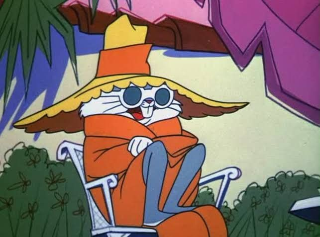

Sobre Pernalonga
Pernalonga surgiu pela primeira vez no dia 27 de julho de 1940, no curta animado The Wild Hare (A Lebre Selvagem, em tradução livre), dirigido por Tex Avery (1908 - 1980). Pernalonga "nasceu" em 1938, no Brooklyn (Nova York), criado por Tex Avery. Já Robert McKimson foi responsável pelo design definitivo do personagem.

Pernalonga é o protagonista das séries de TV animadas Looney Tunes e Merrie Melodies. É o personagem mais popular de ambas as séries e o mascote da Warner Bros. Seus melhores amigos são Patolino e Gaguinho.